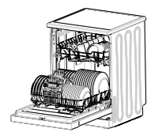
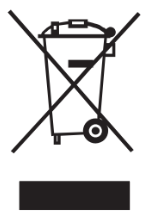
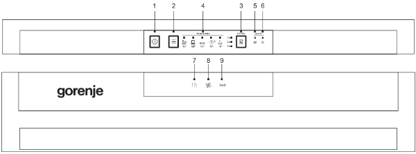

gorenje
|
РЪКОВОДСТВО ЗА УПОТРЕБА
НА СЪДОМИЯЛНА МАШИНА
|
GS62040S
GS62040W

Можете да си вземете съдомиялна от тук: Съдомиялни
Прочетете
това ръководство
Уважаеми клиенти,
Прочетете внимателно ръководството за
употреба на уреда и го запазете за бъдещи
справки.
Предавайте го на всеки следващ
собственик на уреда.
Това ръководство съдържа раздели с
инструкции за безопасност, инструкции за
работа и инструкции за инсталиране, както
и съвети за отстраняване на проблеми и др.
Прочетете го внимателно, преди да
използвате съдомиялната машина. То ще
ви помогне да използвате и поддържате
уреда правилно.
Преди да се
свържете със сервиз
Съветите за отстраняване на проблеми ще
ви помогнат да решите сами някои често
срещани проблеми, без да се обръщате за
помощ към квалифициран техник.
Забележка
В съответствие с политиката си на
непрекъснато развитие и усъвършенстване
на продукта производителят може да прави
промени без предварително уведомление.
| 1) Информация за безопасност ........................ 1-2
| 2) Изхвърляне........................................................ 2
| 3) Инструкции за работа .................................... 3-4
| Контролен панел ................................................... 3
| Характеристики на съдомиялната
| машина .................................................................. 4
| 4) Преди да използвате за първи път............... 4-9
| Омекотител за вода ........................................... 4-5
| Поставяне на сол в омекотителя ..................... 5-6
| Пълнене на диспенсера с препарат
| за изплакване .................................................... 6-7
| Функция на миещия препарат .......................... 7-9
| 5) Зареждане на кошниците ......................... 10-13
| 6) Стартиране на програма за миене ........... 14-15
| Таблица с цикли на измиване ........................... 14
| Включване на уреда ........................................... 14
| Смяна на програма ............................................. 15
| Забравили сте да сложите даден съд ............... 15
| 7) Поддръжка и почистване........................... 16-18
| 8) Инсталиране ............................................... 18-21
| Разположение и нивелиране......................... 18-19
| Свързване към водопроводната
| и електрическата мрежа................................ 19-21
| 9) Съвети за отстраняване
| на проблеми.................................................... 21-25
| Кодове за грешка .............................................. 21
| Преди да се свържете със сервиз ................ 22-23
| Техническа информация ............................... 24-25
| 1. Информация за безопасност |

ПРЕДУПРЕЖДЕНИЕ!
Когато използвате вашата съдомиялна машина, следвайте основните предпазни мерки,
включително описаните по-долу:
|
ПРЕДУПРЕЖДЕНИЕ! ВОДОРОДНИЯТ ГАЗ Е ИЗБУХЛИВ
При определени условия водороден газ може да се образува в система с гореща вода, която не
е била използвана в продължение на 2 седмици или повече. ВОДОРОДНИЯТ ГАЗ Е ИЗБУХЛИВ.
Ако системата с гореща вода не е била използвана за такъв период, преди да използвате
съдомиялната машина, включете всички кранчета за гореща вода и оставете водата от всяко
кранче да тече за няколко минути. Това ще освободи натрупания водороден газ. Тъй като газът
е запалим, не пушете и не използвайте открит пламък през това време.
ПРЕДУПРЕЖДЕНИЕ! ПРАВИЛНА УПОТРЕБА
-
Не натискайте, не сядайте и не се облягайте на вратата или на кошницата за чинии на съдомиялната
машина.
- Не докосвайте нагревателния елемент по време на или веднага след работа на уреда.
-
Не включвайте съдомиялната машина, освен ако всички приложени панели не са поставени на
място. Отворете вратата много внимателно, ако съдомиялната машина работи. Съществува риск от
изтичане на вода.
-
Не поставяйте тежки предмети върху вратата на уреда и не се облягайте на нея, когато е отворена.
Възможно е уредът да се наклони напред.
-
Когато зареждате съдове за миене:
- Поставяйте острите предмети така, че да не повредят уплътнението на вратата;
- Поставяйте острите ножове с дръжките нагоре, за да намалите риска от порезни рани;
-
Предупреждение: Ножовете и другите прибори с остър връх трябва да бъдат поставяни в кошницата
с върха надолу или в хоризонтална позиция.
-
Когато използвате съдомиялната машина, не трябва да позволявате пластмасови предмети да се
докосват до нагревателния елемент.
-
Проверете дали отделението за миещия препарат е празно, след като приключи цикълът на
измиване.
-
Не мийте пластмасови предмети, освен ако нямат обозначение, че са безопасни за миене в
съдомиялна машина. За пластмасовите предмети, които нямат такова обозначение, вижте
препоръките на производителя.
-
Използвайте само препарати за миене и изплакване, които са предназначени за автоматична
съдомиялна машина. Никога не използвайте сапун, препарат за пране или препарат за миене на
ръце в съдомиялната машина.
-
Във фиксираното окабеляване трябва да бъдат предвидени други средства за прекъсване на
захранването с най-малко 3 mm отстояние от всеки полюс.
-
Дръжте децата далеч от препарата за измиване и изплакване и далеч от отворената врата на
съдомиялната машина, все още в нея може да е останал миещ препарат.
- Малките деца трябва да бъдат наглеждани, за да се уверите, че не си играят с уреда.
-
Този уред не е предназначен за употреба от лица (включително деца) с намалени физически,
сетивни или умствени способности или от лица без опит и познания, освен ако не са наблюдавани
или инструктирани относно употребата на уреда от лице, отговорно за тяхната безопасност.
-
Миещите препарати за съдомиялна машина са силно алкални. Може да са изключително опасни при
поглъщане. Избягвайте контакта с кожата и очите и дръжте децата далеч от съдомиялната машина,
когато вратата е отворена.
- Не трябва да оставяте вратата отворена, тъй като има опасност от спъване.
-
Ако захранващият кабел е повреден, той трябва да бъде сменен от производителя, негов оторизиран
сервиз или от техник с подходяща квалификация, за да избегнете всякаква опасност.
- Моля, изхвърлете опаковъчните материали на подходящо място.
-
При инсталирането захранващият кабел не трябва прекомерно или опасно да се огъва или
притиска.
- Не си играйте с контролните бутони.
-
Свържете уреда към водопровода с помощта на нов комплект маркучи. Не използвайте
повторно стари комплекти.
- Уверете се, че килимът не запушва отворите в долната част на уреда.
- Използвайте съдомиялната машина само за предвидената употреба.
- Уредът е предназначен само за употреба на закрито.
-
Съдомиялната машина не е предвидена за търговска употреба. Уредът е предназначен за
ползване в домакинството и други подобни приложения.
|
ПРОЧЕТЕТЕ И СПАЗВАЙТЕ ТЕЗИ ИНСТРУКЦИИ ЗА БЕЗОПАСНОСТ ВНИМАТЕЛНО
ЗАПАЗЕТЕ ТЕЗИ ИНСТРУКЦИИ
|

Изхвърлете правилно материалите, с които е опакована съдомиялната
машина. Всички опаковъчни материали могат да бъдат рециклирани.
Пластмасовите части са маркирани със стандартните международни
абревиатури: (напр. PS за полистиреновите подложки за омекотяване)
Този уред има маркировка съгласно европейска директива 2012/19/
EU относно изхвърлянето на използвано електрическо и електронно
оборудване (WEEE). Директивата посочва рамката за валидно в целия
ПРЕДУПРЕЖДЕНИЕ!
Опаковъчният материал може да бъде опасен за децата!
За изхвърляне на опаковката и на уреда, моля, отидете в център за рециклиране на подобни
отпадъци. Отрежете захранващия кабел и повредете устройството за заключване на вратата,
така че да не може да се затвори.
Картонената опаковка е произведена от рециклирана хартия и трябва да бъде изхвърлена в
контейнера за хартия, за да бъде рециклирана.
Като предадете този продукт на правилното място, вие ще помогнете за предотвратяване на
негативните последствия за околната среда и човешкото здраве, които биха възникнали при
изхвърлянето му на неподходящо място.
За подробна информация относно рециклирането на този продукт можете да се обърнете към
местната градска управа и фирмата за събиране на битови отпадъци.
|
ВАЖНО!
За най-добра работа на съдомиялната машина, прочетете всички инструкции за работа,
преди да използвате уреда за първи път.
|
Контролен панел

1.Бутон за включване и изключване: Включва и изключва
захранването.
2.Бутон за избор на програма: Натиснете бутона, за да
изберете подходяща програма. Съответният индикатор
за програма ще свети, за да укаже коя програма е била
избрана.
3.Бутон за отложен старт: Този бутон ще ви позволи да
отложите автоматично началото на програмата до 9 часа.
4.Светлинен индикатор за програма: Когато изберете
програма
.
5.Индикатор за зареждане със сол: Индикаторът светва, когато трябва
да се добави омекотител.
6.Индикатор за зареждане с препарат за изплакване: Индикаторът
светва, когато диспенсерът трябва да се напълни отново.
7.Индикатор за миене: Включва се, когато съдомиялната машина мие.
8.Индикатор за сушене: Включва се, когато съдомиялната машина
суши.
9.Индикатор за край: Включва се, когато съдомиялната машина е
приключила.
10. След като изберете желаната програма, затворете вратата;
съдомиялната
Отидете най-горе ↑ ↑ ↑
Отидете на другата страница →